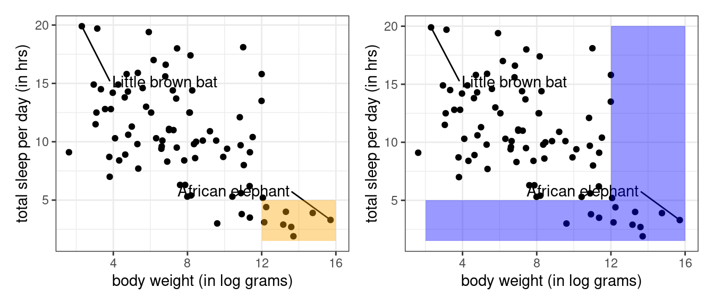

# A tibble: 83 × 5
name sleep_total log_bodywt vore conservation
<chr> <dbl> <dbl> <chr> <chr>
1 Cheetah 12.1 10.8 carni lc
2 Owl monkey 17 6.17 omni <NA>
3 Mountain beaver 14.4 7.21 herbi nt
4 Greater short-tailed shrew 14.9 2.94 omni lc
5 Cow 4 13.3 herbi domesticated
6 Three-toed sloth 14.4 8.26 herbi <NA>
7 Northern fur seal 8.7 9.93 carni vu
8 Vesper mouse 7 3.81 <NA> <NA>
9 Dog 10.1 9.55 carni domesticated
10 Roe deer 3 9.60 herbi lc
# ℹ 73 more rowsConditioning
Filtering, groupwise operations, and data pipelines.
In the world of data, bigger is not always better. Sometimes there are real benefits to working with a subset of your observations that meet some particular condition. One use of conditioning is to add specificity to a claim. Another use of conditioning is to illuminate the relationship between variables.
To gain practice with conditioning, let’s turn to a data set that begins with a very general focus. In 2007, Savage and West published A qualitative, theoretical framework for understanding mammalian sleep1, wherein they “develop a general, quantitative theory for mammalian sleep that relates many of its fundamental parameters to metabolic rate and body size”. Characterizing the sleep patterns of all mammals is a broad task and their data set is corresponding diverse. Take a look at the first ten rows of their data below.
In this data set, the unit of observation is a single species and the variables observed on each are its name, the average length of sleep each day, the natural log of the average weight, its dietary pattern, and its conservation status. We can visualize the relationship between sleep and body size in all 83 species using a scatter plot.
The mammals vary from the wee brown bat, slumbering for nearly 20 hours a day, to the massive African elephant, nodding off for less than five. That is quite a range! Lets drill down to smaller subsets of this data frame to gain a more nuanced sense of what is going on.
Filtering
If you think about the shape of a data frame, there are two basic ways you might go about slicing and dicing it into smaller subsets.
One way is to go at it is column-by-column. The act of selecting a subset of the columns of a data frame is called, well, selecting. When you select a column, you can do so either by its name or by its column number (or index). Selecting columns by name is more useful because their order tends to be arbitrary and might change over the course of an analysis.
The other way to go at it is row-by-row. The act of subsetting the rows of the data frame based on their row number is called slicing. As with columns, the order of the rows is also often arbitrary, so this is of limited use. Much more useful is filtering.
In the tidyverse, these functions are named select(), slice(), and filter().
- Filtering
-
The act of subsetting the rows of a data frame based on the values of one or more variables to extract the observations of interest.
Filters are powerful because they comb through the values of the data frame, which is where most of the information is. The key part of any filter is the condition that you assert for the rows that are retained in your data frame. Let’s set up a filter to return only the little brown bat.
filter(msleep, name == "Little brown bat")# A tibble: 1 × 5
name sleep_total log_bodywt vore conservation
<chr> <dbl> <dbl> <chr> <chr>
1 Little brown bat 19.9 2.30 insecti <NA> Here name == "Little brown bat" is the condition that must be met by any row in the data set to be retained. The syntax used to set up the condition is a comparison between a column in the data frame on the left and a possible value of that column on the right.
Comparison Operators
The filter above uses the most direct condition: it retains the rows that have a value in the name variable that is precisely "Little brown bat". In this case, there is only one such row. There are a range of different comparisons that can be made, though, and each has its own operator.
| Operator | Translation |
|---|---|
== |
equal to |
!= |
not equal to |
< |
less than |
> |
greater than |
<= |
less than or equal to |
>= |
greater than or equal to |
At first, the == operator looks like a typo. Why doesn’t we use =? The reason is that a single equals sign is already busy at work in R: it sets the values of arguments inside a function. Instead of assignment, we want to determine whether the thing on the left holds the same value as the thing on the right, so we use ==. It might help you keep things straight if you read it in your head as “is exactly equal to”.
Let’s return only the rows with large animals, defined as those with a log body weight greater than 12.
filter(msleep, log_bodywt > 12)# A tibble: 9 × 5
name sleep_total log_bodywt vore conservation
<chr> <dbl> <dbl> <chr> <chr>
1 Cow 4 13.3 herbi domesticated
2 Asian elephant 3.9 14.8 herbi en
3 Horse 2.9 13.2 herbi domesticated
4 Donkey 3.1 12.1 herbi domesticated
5 Giraffe 1.9 13.7 herbi cd
6 Pilot whale 2.7 13.6 carni cd
7 African elephant 3.3 15.7 herbi vu
8 Brazilian tapir 4.4 12.2 herbi vu
9 Bottle-nosed dolphin 5.2 12.1 carni <NA> There were 9 such animals and you can see all of them are large.
Logical Operators
What if you want both the little brown bat and the African elephant? What if you want both the large creatures as well as those that sleep only briefly? These are tasks that call for multiple comparisons composed together with the logical operators &, |, and %in%.
This filter returns the creatures who are large and who sleep little.
filter(msleep, log_bodywt > 12 & sleep_total < 5)# A tibble: 8 × 5
name sleep_total log_bodywt vore conservation
<chr> <dbl> <dbl> <chr> <chr>
1 Cow 4 13.3 herbi domesticated
2 Asian elephant 3.9 14.8 herbi en
3 Horse 2.9 13.2 herbi domesticated
4 Donkey 3.1 12.1 herbi domesticated
5 Giraffe 1.9 13.7 herbi cd
6 Pilot whale 2.7 13.6 carni cd
7 African elephant 3.3 15.7 herbi vu
8 Brazilian tapir 4.4 12.2 herbi vu This can be read as “filter the msleep data frame to return the rows where both the log body weight is greater than 12 and the sleep total is less than 5”. We see that there are 8 such creatures, one fewer than the data frame with only the body weight filter (bottle-nosed dolphins sleep, on average, 5.2 hrs).
Using & to represent “and” is common across most computer languages but you can alternatively use the somewhat more compact syntax of simply adding the second filter after a comma.
filter(msleep, log_bodywt > 12, sleep_total < 5)# A tibble: 8 × 5
name sleep_total log_bodywt vore conservation
<chr> <dbl> <dbl> <chr> <chr>
1 Cow 4 13.3 herbi domesticated
2 Asian elephant 3.9 14.8 herbi en
3 Horse 2.9 13.2 herbi domesticated
4 Donkey 3.1 12.1 herbi domesticated
5 Giraffe 1.9 13.7 herbi cd
6 Pilot whale 2.7 13.6 carni cd
7 African elephant 3.3 15.7 herbi vu
8 Brazilian tapir 4.4 12.2 herbi vu These two methods are equivalent.
To return all rows that either have a high body weight or low sleep time or both, use the | operator (sometimes called “vertical bar”).
filter(msleep, log_bodywt > 12 | sleep_total < 5)# A tibble: 12 × 5
name sleep_total log_bodywt vore conservation
<chr> <dbl> <dbl> <chr> <chr>
1 Cow 4 13.3 herbi domesticated
2 Roe deer 3 9.60 herbi lc
3 Asian elephant 3.9 14.8 herbi en
4 Horse 2.9 13.2 herbi domesticated
5 Donkey 3.1 12.1 herbi domesticated
6 Giraffe 1.9 13.7 herbi cd
7 Pilot whale 2.7 13.6 carni cd
8 African elephant 3.3 15.7 herbi vu
9 Sheep 3.8 10.9 herbi domesticated
10 Caspian seal 3.5 11.4 carni vu
11 Brazilian tapir 4.4 12.2 herbi vu
12 Bottle-nosed dolphin 5.2 12.1 carni <NA> Be cautious in deciding whether you want to use & or |. While | is generally read as “or”, we could also describe the above filter as one that returns the rows that have a high body weight and the rows that have low sleep times.
One way to keep them straight is to keep an eye on the number of observations that are returned. The intersection of multiple conditions (using &) should result in the same or fewer rows (the orange area) than the union of multiple conditions (using |) (the blue area).

When working with nominal categorical variables, the only operator that you’ll be using is ==. You can return a union like normal using |,
filter(msleep, name == "Little brown bat" | name == "African elephant")# A tibble: 2 × 5
name sleep_total log_bodywt vore conservation
<chr> <dbl> <dbl> <chr> <chr>
1 African elephant 3.3 15.7 herbi vu
2 Little brown bat 19.9 2.30 insecti <NA> Or you can save some typing (and craft more readable code) by using %in% instead:
filter(msleep, name %in% c("Little brown bat", "African elephant"))# A tibble: 2 × 5
name sleep_total log_bodywt vore conservation
<chr> <dbl> <dbl> <chr> <chr>
1 African elephant 3.3 15.7 herbi vu
2 Little brown bat 19.9 2.30 insecti <NA> Taxonomy of Data: Logicals
It is useful to pause here to look under the hood of this code. Once you get accustomed to the comparison operators and the syntax, the R code reads very similarly to the equivalent English command. But how are those comparisons being represented in terms of data?
To answer this question, consider a simple numeric vector of four integers.
a <- c(2, 4, 6, 8)We can apply a comparison operator to this vector using the same syntax as above. Let’s compare each value in this vector to see if its less than 5.
a < 5[1] TRUE TRUE FALSE FALSEThe result is a vector of the same length as a where each value indicates whether the comparison to each element was true or false. While it looks like a factor or a character vector TRUE and FALSE, this is actually our newest entry into the Taxonomy of Data: the logical vector.
class(a < 5)[1] "logical"A logical vector can only take two values, TRUE and FALSE (R also recognizes T and F but not True or true). While it might seem like a categorical variable with only two levels, a logical vector has an important property that makes it behave like a numerical variable.
sum(a < 5)[1] 2In a logical vector, a value of true is represented both by TRUE and by the number 1 and false by FALSE and the number 0. This integer representation is why TRUE + TRUE will work (it’s 2!) but "TRUE" + "TRUE" will not.
This dual representation is very useful because it allows us to compute a proportion using, paradoxically, the mean() function.
mean(a < 5)[1] 0.5a < 5 results in a vector with two 1s and two 0s. When you take the mean like this, you’re really finding the proportion of the elements that meet the condition that you laid out in your comparison. This is a very handy trick. We’ll use it more in a moment.
Data Pipelines
At this stage in the course, the number of functions that you are familiar with has grown dramatically. To do truly powerful things with data, you need to not just call one of these functions, but string together many of them in a thoughtful and organized manner.
An an example, to create a sorted data frame containing just the large animals, we need to take the original data frame and
filter()such thatlog_bodywt > 12and thenarrange()in descending order of weight (desc(log_bodywt)).
A conventional approach breaks this process into two distinct lines of code and saves the output mid-way through.
msleep_large <- filter(msleep, log_bodywt > 12)
arrange(msleep_large, desc(log_bodywt))# A tibble: 9 × 5
name sleep_total log_bodywt vore conservation
<chr> <dbl> <dbl> <chr> <chr>
1 African elephant 3.3 15.7 herbi vu
2 Asian elephant 3.9 14.8 herbi en
3 Giraffe 1.9 13.7 herbi cd
4 Pilot whale 2.7 13.6 carni cd
5 Cow 4 13.3 herbi domesticated
6 Horse 2.9 13.2 herbi domesticated
7 Brazilian tapir 4.4 12.2 herbi vu
8 Donkey 3.1 12.1 herbi domesticated
9 Bottle-nosed dolphin 5.2 12.1 carni <NA> An approach that is more concise, easier to read, and generally faster to run is to compose these functions together with “the pipe”, written |>. If you have two functions, f1 and f2, both of which take a data frame as the first argument, you can pipe the output of f1 directly into f2 using.
f1(DF) |> f2()Let’s use the pipe to rewrite the code shown above.
filter(msleep, log_bodywt > 12) |> arrange(desc(log_bodywt))# A tibble: 9 × 5
name sleep_total log_bodywt vore conservation
<chr> <dbl> <dbl> <chr> <chr>
1 African elephant 3.3 15.7 herbi vu
2 Asian elephant 3.9 14.8 herbi en
3 Giraffe 1.9 13.7 herbi cd
4 Pilot whale 2.7 13.6 carni cd
5 Cow 4 13.3 herbi domesticated
6 Horse 2.9 13.2 herbi domesticated
7 Brazilian tapir 4.4 12.2 herbi vu
8 Donkey 3.1 12.1 herbi domesticated
9 Bottle-nosed dolphin 5.2 12.1 carni <NA> What has changed? Most immediately, we have reduced two lines of code to one. The first function, filter(), is unchanged however the second function, arrange(), is now missing its first argument, the data frame. That is because it is being piped directly in from the output of the first function.
While this is a fine way to use the pipe, your code is made much more readable if you format it like this:
msleep |>
filter(log_bodywt > 12) |>
arrange(desc(log_bodywt))# A tibble: 9 × 5
name sleep_total log_bodywt vore conservation
<chr> <dbl> <dbl> <chr> <chr>
1 African elephant 3.3 15.7 herbi vu
2 Asian elephant 3.9 14.8 herbi en
3 Giraffe 1.9 13.7 herbi cd
4 Pilot whale 2.7 13.6 carni cd
5 Cow 4 13.3 herbi domesticated
6 Horse 2.9 13.2 herbi domesticated
7 Brazilian tapir 4.4 12.2 herbi vu
8 Donkey 3.1 12.1 herbi domesticated
9 Bottle-nosed dolphin 5.2 12.1 carni <NA> This code results in the same output as the first version, but it now reads a bit like a poem: “Take the msleep data frame then filter it such that the log body weight is greater than twelve then arrange it in descending order by log body weight”.
This poem is admittedly not particularly poetic.
Let’s look at an example to understand the power of such a simple piece of syntax.
Example 2
What proportion of carnivores sleep more than 8 hours per night?
Answering this requires two steps: filter()ing to focus on carnivores and summarize()ing with a proportion that meet a condition (recall that a comparison results in a logical vector of 0s and 1s). It is often a good idea to record the number of observations that go into a summary statistic, which we do here with n().
msleep |>
filter(vore == "carni") |>
summarize(p_gt_8hrs = mean(sleep_total > 8),
n = n())# A tibble: 1 × 2
p_gt_8hrs n
<dbl> <int>
1 0.684 19What year had the greatest total number of christenings?
The original arbuthnot data frame, which captures birth records in 17th century London, in fact records the numbers of boys and girls names that appear in church christening records. To find the year with the greatest total number of christenings requires first the creation of a new column with mutate(), then arrange()ing the rows of that data frame, then select()ing just the rows of interst. As one pipeline, that is:
library(stat20data)
arbuthnot |>
mutate(total = boys + girls) |>
arrange(desc(total)) |>
select(year, total)# A tibble: 82 × 2
year total
<int> <int>
1 1705 16145
2 1707 16066
3 1698 16052
4 1708 15862
5 1697 15829
6 1702 15687
7 1701 15616
8 1703 15448
9 1706 15369
10 1699 15363
# ℹ 72 more rowsWhat is the trend in the total number of christenings over time?
arbuthnot |>
mutate(total = boys + girls) |>
ggplot(aes(x = year, y = total)) +
geom_line()This demonstrates that you can pipe a data frame directly into a ggplot - the first argument is a data frame after all! The main thing to note is that when moving into a ggplot, the layers are added with the + operator instead of the pipe, |>.
Groupwise Operations Revisited…
The last example above demonstrates a very common scenario: you want to perform some calculations on one particular group of observations in your data set. But what if you want to do that same calculation for every group?
The vore variable has four levels: carni, herbi, insecti, and omni. It would not be too difficult to copy and paste the above pipeline four times and modify each filter function to focus on a different group. But what if there were a dozen different levels?
This task - performing an operation on all groups of a data set one-by-one - is such a common data science task that nearly every software tool has a good solution. In the tidyverse, the solution is the group_by() function. Let’s see it in action.
msleep |>
group_by(vore) |>
summarize(p_gt_8hrs = mean(sleep_total > 8),
n = n())# A tibble: 5 × 3
vore p_gt_8hrs n
<chr> <dbl> <int>
1 carni 0.684 19
2 herbi 0.594 32
3 insecti 1 5
4 omni 0.95 20
5 <NA> 0.714 7Like most tidyverse functions, the first argument to group_by() is a data frame, so it can be slotted directly into the pipeline. The second argument, the one that shows up in the code above, is the name of the variable that you want to use to delineate the groups. This is generally a factor, character, or logical vector.
group_by() is an incredibly powerful function because it changes the behavior of downstream functions. Lets break our pipeline and inspect the data frame that comes out of it.
msleep |>
group_by(vore)# A tibble: 83 × 5
# Groups: vore [5]
name sleep_total log_bodywt vore conservation
<chr> <dbl> <dbl> <chr> <chr>
1 Cheetah 12.1 10.8 carni lc
2 Owl monkey 17 6.17 omni <NA>
3 Mountain beaver 14.4 7.21 herbi nt
4 Greater short-tailed shrew 14.9 2.94 omni lc
5 Cow 4 13.3 herbi domesticated
6 Three-toed sloth 14.4 8.26 herbi <NA>
7 Northern fur seal 8.7 9.93 carni vu
8 Vesper mouse 7 3.81 <NA> <NA>
9 Dog 10.1 9.55 carni domesticated
10 Roe deer 3 9.60 herbi lc
# ℹ 73 more rowsThis looks . . . exactly like the original data frame.
Well, not exactly like it: there is now a note at the top that the data frame now has the notion of groups based on vore. In effect, group_by() has taken the generic data frame and turned it into the one in the middle below: the same data frame but with rows now flagged as belonging to one group or another. When we pipe this grouped data frame into summarize(), summarize() collapses that data frame down into a single row for each group and creates a new column for each new summary statistic.
Summary
There are several ways to subset a data frame but the most important for data analysis is filtering: subsetting the rows according to a condition. In R, that condition is framed in terms of a comparison between a variable and a value (or set of values). Comparisons take many forms and can be combined using logical operators. The result is a logical vector that can be used for filtering or computing summary statistics. You can perform simultaneous analyses on multiple subsets by doing groupwise operations with group_by().
As we begin to do analyses that require multiple operations, the pipe operator, |>, can be used to stitch the functions together into a single pipeline.
If you’re thinking, 😬 , yikes there was a lot of coding in these notes, you’re right. Keep reading, you’ll have an opportunity for some practice in the tutorial.
Footnotes
V. M. Savage and G. B. West. A quantitative, theoretical framework for understanding mammalian sleep. Proceedings of the National Academy of Sciences, 104 (3):1051-1056, 2007.↩︎